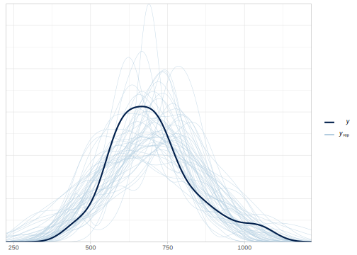
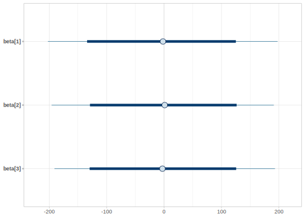
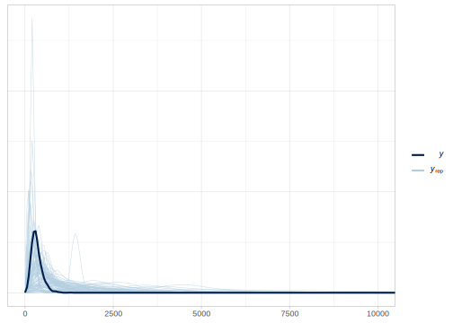
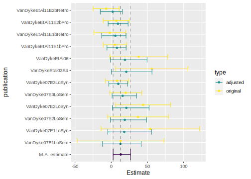

15.1 A mixture model of the speed-accuracy trade-off
It has been long noticed that when we are faced with multiple choices that require an immediate decision, we can speed up the decision at the expense of accuracy and become more accurate at the expense of speed; this is the so-called speed-accuracy trade-off (Wickelgren 1977) . The most popular class of models that can incorporate both response times and accuracy and give an account for the speed-accuracy trade-off is the class of sequential sampling models, which include the drift diffusion model (Ratcliff 1978), the linear ballistic accumulator (Brown and Heathcote 2008), and others; for a review see Ratcliff et al. (2016).
However, an alternative model that has been proposed in the past is Ollman's simple fast guess model (Ollman 1966). Although it has mostly fallen out of favor (but see Dutilh et al. 2011 for a more modern variant of this model), it presents a very simple framework using finite mixture modeling that can also account for the speed-accuracy trade-off. In the next section, we'll use this model to exemplify the use of finite mixtures to represent different cognitive processes.
15.1.1 A fast guess model account of the global motion detection task
One way to examine the behavior of human and primate subjects when faced with two-alternative forced choices is the detection of the global motion of a random dot kinematogram (Britten et al. 1993). In this task, a participant sees a number of random dots on the screen from which a proportion of them move in a single direction (e.g., up) and the rest move in random directions. The participant's goal is to estimate the overall direction of the movement. One of the reasons for the popularity of this task is that it permits the fine-tuning of the difficulty of trials (Dutilh et al. 2019): The task is harder when the proportion of dots that move coherently (the level of coherence) is lower; see Fig. 15.1.

FIGURE 15.1: Three levels of difficulty of the global motion detection task. The figures show a consistent upward movement with three levels of coherence (10%, 50%, and 100%). The participants see the dots moving in the direction indicated by the arrows. The participants do not see the arrows and all the dots look identical in the actual task. Adapted from Han et al. (2018); licensed under CC BY 4.0.
Ollman's (1966) fast guess model assumes that the behavior in this task (and in any other choice task) is governed by two distinct cognitive processes: (i) a guess mode, and (ii) a task-engaged mode. In the guess mode, responses are fast and accuracy is at chance level. In the task-engaged mode, responses are slower and accuracy approaches 100%. This means that intermediate values of response times and accuracy can only be achieved by mixing responses from the two modes. Further assumptions of this model are that response times depend on the difficulty of the choice, and that the probability of being on one of the two states depend on the speed incentives during the instructions. (To simplify matters, we'll ignore the possibility of the accuracy of the choice being also affected by the difficulty of the choice.)
15.1.1.1 Dataset
We implement the assumptions behind Ollman's fast guess model and examine its fit to data of a global motion detection task from Dutilh et al. (2019).31
The dataset from Dutilh et al. (2019) contains ~2800 trials of each of the 20 subjects participating in a global motion detection task. There were two level of coherence yielding hard and easy trials (diff), and the trials where done under instructions that emphasized either accuracy or speed (emphasis). (The description of the other columns can be found in https://osf.io/utkjf/.)
(df_dots_data <- read_csv("data/global_motion.csv"))## # A tibble: 56,097 x 11
## subject diff emphasis rt acc fix.dur stim resp trial block
## <dbl> <chr> <chr> <dbl> <dbl> <dbl> <chr> <chr> <dbl> <dbl>
## 1 1 easy speed 482 1 0.738 R R 1 6
## 2 1 hard speed 602 1 0.784 R R 2 6
## 3 1 hard speed 381 1 0.651 R R 3 6
## 4 1 hard speed 584 1 0.781 R R 4 6
## 5 1 hard speed 464 0 0.585 L R 5 6
## block.trial
## <dbl>
## 1 1
## 2 2
## 3 3
## 4 4
## 5 5
## # … with 56,092 more rowsWe could imagine that if the fast guesses model would be true, we would see a bimodal distribution, when we plot a histogram of the data. Unfortunately, when two similar distributions are mixed, we won't see any apparent bimodality:
ggplot(df_dots_data, aes(rt)) +
geom_histogram()
However, another plot reveals that incorrect responses are generally faster, and this is especially true when the instructions emphasized accuracy:
ggplot(df_dots_data, aes(x = factor(acc), y = rt)) +
geom_point(position = position_jitter(width = .4, height = 0),
alpha = .5) +
facet_wrap(diff ~ emphasis) +
xlab("Accuracy") +
ylab("Response time")
15.1.1.2 A very simple implementation of the fast guess model
The description of the model makes clear that an ideal participant that never guesses has a response time that depends on the difficulty of the trial. As we did in previous chapters, we assume that response times are log-normally distributed, and for simplicity we start by modeling the behavior of a single subject:
\[\begin{equation} rt_n \sim LogNormal(\alpha + \beta \cdot x_n, \sigma) \end{equation}\]In the previous equation, \(x\) is larger for difficult trials. If we center \(x\), \(\alpha\) represents the average logarithmic transformed response times for a participant engaged in the task, and \(\beta\) is the effect of trial difficulty on log-response time. We assume a non-deterministic process, with a noise parameter \(\sigma\). See also Box 4.3 for more information about log-normally distributed response times.
Alternatively, a participant that guesses in every trial would show a response time that is independent of the difficulty of the trial:
\[\begin{equation} rt_n \sim LogNormal(\gamma, \sigma_2) \end{equation}\]Here \(\gamma\) represents the the average logarithmic transformed response time when a participant only guesses. We assume that responses from the guess mode might have a different noise component than from a task-engaged mode.
The fast guess model makes the assumption that during a task, a single participant would behave in these two ways: They would be engaged in the task a proportion of the trials and would guess on the rest of the trials. This means that for a single participant, there is an underlying probability of being engaged in the task, \(p_{task}\), that determines whether they are actually choosing (\(z=1\)) or guessing (\(z=0\)):
\[\begin{equation} z_n \sim Bernoulli(p_{task}) \end{equation}\]The value of the parameter \(z\) in every trial determines the behavior of the participant. This means that the distribution that we observe is a mixture of the two distributions presented before:
\[\begin{equation} rt_n \sim \begin{cases} LogNormal(\alpha + \beta \cdot x_n, \sigma), & \text{ if } z_n =1 \\ LogNormal(\gamma, \sigma_2), & \text{ if } z_n=0 \end{cases} \tag{15.1} \end{equation}\]In order to have a Bayesian implementation, we also need to define some priors. We use priors that encode what we know about reaction time experiments; see also 4.2.
\[\begin{equation} \begin{aligned} \alpha &\sim Normal(6, 1)\\ \beta &\sim Normal(0, .1)\\ \sigma &\sim Normal_+(.5, .2) \end{aligned} \end{equation}\] \[\begin{equation} \begin{aligned} \gamma &\sim Normal(6, 1)\\ \sigma_2 &\sim Normal_+(.5, .2) \end{aligned} \end{equation}\]For now, we don't commit to any value for the probability of having an engaged response by setting the following prior to \(p_{task}\):
\[\begin{equation} p_{task} \sim Beta(1, 1) \end{equation}\]This represents a flat prior over probabilities, \(p_{task}\) is equally likely to be any number between 0 and 1.
Before we fit our model to the real data, we generate synthetic data to make sure that our model is working as expected. We follow Cook, Gelman, and Rubin (2006), and for now we are going to verify that our model is roughly correct (a more thorough approach is presented in Talts et al. 2018; and Schad, Betancourt, and Vasishth 2020). We are going to generate 1000 observations, where we know the true values of the parameters.
We first define the number of observations, predictors, and true values. We assume 1000 observations and two levels of difficulty -.5 and .5. The values of the parameters are relatively realistic (based on our previous experience on reaction time experiments). Notice that while in the priors we try to encode the range of possible values for the parameters, in this simulation we assume only one instance of this possible range:
N <- 1000
x <- c(rep(-.5, N/2), rep(.5, N/2))
# Parameters true values
alpha <- 5.8
beta <- 0.05
sigma <- .4
sigma2 <- .5
gamma <- 5.2
p_task <- .8
# Median time
c("engaged" = exp(alpha), "guessing" = exp(gamma))## engaged guessing
## 330 181Generate response times:
z <- extraDistr::rbern(n = N, prob = p_task)
rt <- if_else(z == 1,
rlnorm(n = N, meanlog = alpha + beta * x, sdlog = sigma),
rlnorm(n = N, meanlog = gamma, sdlog = sigma2))
df_dots_simdata1 <- tibble(trial = 1:N, x = x, rt = rt)We verify that our simulated data is realistic, that is, it's on the same range as the original data:
ggplot(df_dots_simdata1, aes(rt)) +
geom_histogram()
To implement the mixture model defined in Eq. (3.8) in Stan, the discrete parameter \(z\) needs to be marginalized:
\[\begin{equation} \begin{aligned} p(rt_n | \Theta) &= p_{task} \cdot LogNormal(rt_n | \alpha + \beta \cdot x_n, \sigma) +\\ & (1 - p_{task}) \cdot LogNormal(rt_n | \gamma, \sigma_2) \end{aligned} \end{equation}\] In addition, we need to work in log-space, taking into account that Stan defines log(PDF) rather than PDFs: \[\begin{equation} \begin{aligned} \log(p(rt | \Theta)) &= \log(p_{task} \cdot LogNormal(rt_n | \alpha + \beta * x_n, \sigma) +\\ & (1 - p_{task}) \cdot LogNormal(rt_n | \gamma, \sigma_2)) \\ &= \log( \exp( \log(p_{task}) + \log(LogNormal(rt_n | \alpha + \beta * x_n, \sigma))) +\\ & \exp( \log(1 - p_{task}) + \log(LogNormal(rt_n | \gamma, \sigma_2)))) \\ \end{aligned} \end{equation}\]In Stan this translates into:
data {
int<lower = 1> N;
vector[N] x;
vector[N] rt;
}
parameters {
real alpha;
real beta;
real<lower = 0> sigma;
real gamma; //guessing
real<lower = 0> sigma2;
real<lower = 0, upper = 1> p_task;
}
model {
// priors for the task component
target += normal_lpdf(alpha | 6, 1);
target += normal_lpdf(beta | 0, .1);
target += normal_lpdf(sigma | .5, .2)
- normal_lccdf(0 | .5, .2);
// priors for the guessing component
target += normal_lpdf(gamma | 6, 1);
target += normal_lpdf(sigma2 | .5, .2)
- normal_lccdf(0 | .5, .2);
target += beta_lpdf(p_task | 1, 1);
for(n in 1:N)
target += log_sum_exp(log(p_task) + lognormal_lpdf(rt[n] | alpha + x[n] * beta, sigma),
log1m(p_task) + lognormal_lpdf(rt[n] | gamma, sigma2));
}In the previous code, we use log_sum_exp(x, y) and log1m(x) since they are more computationally stable than log(exp(x) + exp(y)) and log(1-x) respectively. That is, they are less prone to numerical over/underflows.
Call the Stan model stan_models/mixture1.stan, and fit it to the simulated data:
ls_dots_simdata <- list(N = N,
rt = rt,
x = x) fit_mix_1 <- stan(file = 'stan_models/mixture1.stan',
data = ls_dots_simdata) ## Warning: The largest R-hat is 1.74, indicating chains have not mixed.
## Running the chains for more iterations may help. See
## http://mc-stan.org/misc/warnings.html#r-hat## Warning: Bulk Effective Samples Size (ESS) is too low, indicating posterior means and medians may be unreliable.
## Running the chains for more iterations may help. See
## http://mc-stan.org/misc/warnings.html#bulk-ess## Warning: Tail Effective Samples Size (ESS) is too low, indicating posterior variances and tail quantiles may be unreliable.
## Running the chains for more iterations may help. See
## http://mc-stan.org/misc/warnings.html#tail-essThere a lot of warnings, the Rhats are too large, and number of effective samples is too low:
print(fit_mix_1) ## mean 2.5% 97.5% n_eff Rhat
## alpha 5.57 4.94 5.82 3 1.71
## beta 0.06 -0.09 0.16 45 1.05
## sigma 0.48 0.33 0.66 2 2.24
## gamma 5.54 4.91 5.83 3 1.88
## sigma2 0.47 0.32 0.65 3 2.09
## p_task 0.53 0.09 0.91 3 1.54
## lp__ -6349.94 -6354.70 -6346.88 10 1.14A traceplot shows clearly that the chains aren't mixing.
traceplot(fit_mix_1) 
The problem with this model is that the mixture components are underlyingly exchangeable and thus not identifiable. Each chain doesn't know how each component was identified by the rest of the chains. A major problem is that even though the theoretical model assumes that guesses are faster than engaged responses, this is not explicit in our computational model. That is, our model lacks some of the theoretical information that we have, namely that the distribution of guesses times is faster than the distribution of engaged reaction times. This can be encoded with a strong prior for \(\gamma\), where we assume that its prior distribution is truncated on a lower bound by the value of \(\alpha\):
\[\begin{equation} \gamma \sim Normal(6, 1), \text{for } \gamma > \alpha \end{equation}\]Another softer constraint that we could add to our implementation is the assumption that participants are generally trying to do the task more likely than just guessing. The following prior has more probability mass closer to 1 than to 0:
\[\begin{equation} p_{task} \sim Beta(8, 2) \end{equation}\]plot(function(x) dbeta(x, 8, 2))
data {
int<lower = 1> N;
vector[N] x;
vector[N] rt;
}
parameters {
real alpha;
real beta;
real<lower = 0> sigma;
real<upper = alpha> gamma; //guessing
real<lower = 0> sigma2;
real<lower = 0, upper = 1> p_task;
}
model {
// priors for the task component
target += normal_lpdf(alpha | 6, 1);
target += normal_lpdf(beta | 0, .3);
target += normal_lpdf(sigma | .5, .2)
- normal_lccdf(0 | .5, .2);
// priors for the guessing component
target += normal_lpdf(gamma | 6, 1) -
normal_lcdf(alpha | 6, 1);
target += normal_lpdf(sigma2 | .5, .2)
- normal_lccdf(0 | .5, .2);
target += beta_lpdf(p_task | 8, 2);
for(n in 1:N)
target += log_sum_exp(log(p_task) + lognormal_lpdf(rt[n] | alpha + x[n] * beta, sigma),
log1m(p_task) + lognormal_lpdf(rt[n] | gamma, sigma2)) ;
}Notice that once we change the higher boundary of gamma we also need to truncate the distribution in Stan by correcting the PDF with its CDF (rather than with the complement of the CDF as when we have a lower truncation); see also Box 4.1.
target += normal_lpdf(gamma | 6, 1) -
normal_lcdf(alpha | 6, 1);Fit it to the same dataset:
fit_mix_2 <- stan(file = 'stan_models/mixture2.stan',
data = ls_dots_simdata) Now summaries and plots look fine.
print(fit_mix_2) ## mean 2.5% 97.5% n_eff Rhat
## alpha 5.75 5.69 5.81 1599 1
## beta 0.08 0.02 0.15 2593 1
## sigma 0.41 0.36 0.45 1696 1
## gamma 5.24 4.76 5.53 1006 1
## sigma2 0.56 0.40 0.69 1278 1
## p_task 0.78 0.58 0.94 1262 1
## lp__ -6348.87 -6353.12 -6346.51 1201 1traceplot(fit_mix_2) 
15.1.1.3 A multivariate implementation of the model
A problem with the previous implementation of the fast guess model is that we don't use the accuracy information. We can implement a closer version of the verbal description of the model: In particular we also want to model that in the guess mode accuracy is at chance level and that during the task-engaged mode accuracy approaches 100%.
This means that the mixture affects two pairs of distributions:
\[\begin{equation} z_n \sim Bernoulli(p_{task}) \end{equation}\]A response time distribution
\[\begin{equation} rt_n \sim \begin{cases} LogNormal(\alpha + \beta \cdot x_n, \sigma), & \text{ if } z_n =1 \\ LogNormal(\gamma, \sigma_2), & \text{ if } z_n=0 \end{cases} \tag{15.2} \end{equation}\]and an accuracy distribution
\[\begin{equation} acc_n \sim \begin{cases} Bernoulli(p_{correct}), & \text{ if } z_n =1 \\ Bernoulli(.5), & \text{ if } z_n=0 \end{cases} \tag{15.3} \end{equation}\]We have a new parameter \(p_{correct}\), which represent the probability of making a correct answer in the engaged mode. The verbal description says that it's closer to 100%, and here we have freedom to choose whatever prior represents for us close to 100%. We interpret this as follows, but notice that this is not a hard constraint, and if a participant consistently shows lower (or higher) accuracy, \(p_{correct}\) will change:
\[\begin{equation} p_{correct} \sim Beta(995, 5) \end{equation}\]In our simulated data, we assume that the global motion detection task is done by a very accurate participant, with an accuracy of 99.9%. .
p_correct <- .999
acc <- ifelse(z, rbern(n = N, p_correct),
rbern(n = N, .5))
df_dots_simdata3 <- tibble(trial = 1:N,
x = x,
rt = rt,
acc = acc) %>%
mutate(diff = if_else(x == .5, "hard", "easy"))We plot again our simulated data, and this time we can see the effect of task difficulty on the simulated response times and accuracy:
ggplot(df_dots_simdata3, aes(x = factor(acc), y = rt)) +
geom_point(position = position_jitter(width = .4, height = 0),
alpha = .5) +
facet_wrap(diff ~ .) +
xlab("Accuracy") +
ylab("Response time")
We need now to marginalize the discrete parameters from both pairs of distributions.
\[\begin{equation} \begin{aligned} p(rt | \Theta) = & p_{task} \cdot \\ & LogNormal(rt_n | \alpha + \beta \cdot x_n, \sigma) \cdot \\ & Bernoulli(acc_n | p_{correct}) \\ & +\\ & (1 - p_{task}) \cdot \\ & LogNormal(rt_n | \gamma, \sigma_2) \cdot\\ & Bernoulli(acc_n | .5) \end{aligned} \end{equation}\]In log-space:
\[\begin{equation} \begin{aligned} \log(p(rt | \Theta)) = \log(\exp(&\\ & \log(p_{task}) +\\ &\log(LogNormal(rt_n | \alpha + \beta * x_n, \sigma)) + \\ &\log(Bernoulli(acc_n | p_{correct})))\\ +&\\ \exp(&\\ & \log(1 - p_{task}) + \\ & \log(LogNormal(rt_n |\gamma, \sigma_2)) + \\ & \log(Bernoulli(acc_n | .5)))\\ )& \\ \end{aligned} \end{equation}\]Our model translates into the following Stan code:
data {
int<lower = 1> N;
vector[N] x;
vector[N] rt;
int acc[N];
}
parameters {
real alpha;
real beta;
real<lower = 0> sigma;
real<upper = alpha> gamma; //guessing
real<lower = 0> sigma2;
real<lower = 0, upper = 1> p_correct;
real<lower = 0, upper = 1> p_task;
}
model {
// priors for the task component
target += normal_lpdf(alpha | 6, 1);
target += normal_lpdf(beta | 0, .3);
target += normal_lpdf(sigma | .5, .2)
- normal_lccdf(0 | .5, .2);
// priors for the guessing component
target += normal_lpdf(gamma | 6, 1);
target += normal_lpdf(sigma2 | .5, .2)
- normal_lccdf(0 | .5, .2);
target += beta_lpdf(p_correct | 995, 5);
target += beta_lpdf(p_task | 8, 2);
for(n in 1:N)
target += log_sum_exp(log(p_task) +
lognormal_lpdf(rt[n] | alpha + x[n] * beta, sigma) +
bernoulli_lpmf(acc[n] | p_correct),
log1m(p_task) +
lognormal_lpdf(rt[n] | gamma, sigma2) +
bernoulli_lpmf(acc[n] | .5));
}Save it as stan_models/mixture3.stan and fit it to also accuracy:
ls_dots_simdata <- list(N = N,
rt = rt,
x = x,
acc = acc)
fit_mix_3 <- stan(file = 'stan_models/mixture3.stan',
data = ls_dots_simdata) We see that our model can be fit to both response times and accuracy now, and its parameters estimates have sensible values (given our simulated data).
print(fit_mix_3)## mean 2.5% 97.5% n_eff Rhat
## alpha 5.78 5.74 5.81 4045 1
## beta 0.07 0.01 0.13 5539 1
## sigma 0.40 0.38 0.42 4742 1
## gamma 5.15 5.06 5.25 4268 1
## sigma2 0.50 0.44 0.56 4513 1
## p_correct 0.99 0.99 1.00 4314 1
## p_task 0.80 0.76 0.83 4857 1
## lp__ -6633.52 -6638.15 -6630.87 1966 1Before we extend this model hierarchically we will account for the instructions given to the participant in the next section.
15.1.1.4 An implementation of the model that accounts for instructions
The actual global motion detection experiment that we started from has another manipulation that can help us to evaluate better the fast guess model. In some trials, the instructions emphasized accuracy (e.g., "Be as accurate as possible.") and in others speed (e.g., "Be as fast as possible."). The fast guess model also assumes that the probability of being in one of the two states depend on the speed incentives given during the instructions. This entails that now \(p_{task}\) depends on the instructions \(x_2\), where we encode a speed incentive with \(-.5\) and an accuracy incentive with \(.5\). Essentially we need to fit the following regression:
\[\begin{equation} \alpha_{task} + x_2 \cdot \beta_{task} \end{equation}\]As we did in 14.2.1.4, we need to bound the previous regression between 0 and 1, we achieve this using the logistic or inverse logit function:
\[\begin{equation} p_{task} = logit^{-1}(\alpha_{task} + x_2 \cdot \beta_{task}) \end{equation}\]This means that we need to interpret \(\alpha_{task} + x_2 \cdot \beta_{task}\) in log-odds bounded by \((-\infty, \infty)\) rather than as a probability; see also 14.2.1.4 in the previous chapter.
The likelihood defined before in 15.1.1.3 remains the same, and the only further change in our model is that rather than a prior on \(p_{task}\) we need now priors for \(\alpha_{task}\) and \(\beta_{task}\).
For \(\beta_{task}\), we assume an effect that can rather large and we won't assume a direction a prior (for now):
\[\begin{equation} \beta \sim Normal(0, 1) \end{equation}\]This means that the participant could be affected by the instructions in the expected way with better accuracy in the task when the instructions emphasize accuracy (\(\beta >0\)), or the participant might be behaving in an unexpected way with accuracy degrading when accuracy is emphasized (\(\beta <0\)); \(\beta <0\) could represent a participant that misunderstands the instructions. It's certainly possible to include priors that encode the expected direction of the effect instead.
How can we choose a prior for \(\alpha_{task}\) that encodes the same information that we had in the previous model in \(p_{task}\)? One possibility is to create an auxiliary parameter \(p_{btask}\), that represents the baseline probability of being engaged in the task, with the same prior that we use in the previous section, and then transform it to an unconstrained space for our regression with the logit function:
\[\begin{equation} \begin{aligned} &p_{btask} \sim Beta(8, 2)\\ &\alpha_{task} = logit(p_{btask}) \end{aligned} \end{equation}\]To verify that our priors make sense, we plot the difference in prior predicted probability of being engaged in the task under the two emphasis conditions:
Ns <- 1000 # number of samples for the plot
# Priors
p_btask <- rbeta(n = Ns, shape1 = 8, shape2 = 2)
beta_task <- rnorm(n = Ns, mean = 0, sd = 1)
# Predicted probability of being engaged
p_task_easy <- plogis(qlogis(p_btask) + .5 * beta_task)
p_task_hard <- plogis(qlogis(p_btask) + -.5 * beta_task)
# Predicted difference
diff_p_pred <- tibble(diff = p_task_easy - p_task_hard)diff_p_pred %>%
ggplot(aes(diff)) +
geom_histogram()
The previous plot shows that we are predicting a priori that the difference in \(p_{task}\) will be mostly smaller than \(.3\), which seems to make sense.
We are ready to generate a new dataset, by deciding on true values for \(\beta_{task}\) and \(p_{btask}\).
# New predictor
x2 <- rep(c(-.5, .5), N/2)
# We verify that the predictors are crossed:
predictors <- tibble(x, x2)
head(predictors, 4)## # A tibble: 4 x 2
## x x2
## <dbl> <dbl>
## 1 -0.5 -0.5
## 2 -0.5 0.5
## 3 -0.5 -0.5
## 4 -0.5 0.5tail(predictors, 4)## # A tibble: 4 x 2
## x x2
## <dbl> <dbl>
## 1 0.5 -0.5
## 2 0.5 0.5
## 3 0.5 -0.5
## 4 0.5 0.5# New true values
beta_task <- 0.5
p_btask <- .85
# Generate data:
alpha_task <- qlogis(p_task)
p_task <- plogis(alpha_task + x2 * beta_task)
z <- rbern(n = N, prob = p_task)
rt <- ifelse(z, rlnorm(n = N, meanlog = alpha + beta * x, sdlog = sigma),
rlnorm(n = N, meanlog = gamma, sdlog = sigma2))
acc <- ifelse(z, rbern(n = N, p_correct),
rbern(n = N, .5))
df_dots_simdata4 <- tibble(trial = 1:N, x = x, rt = rt, acc = acc, x2 = x2) %>%
mutate(diff = if_else(x == .5, "hard", "easy"),
emphasis = ifelse(x2 == .5, "accuracy", "speed"))We can generate a plot now were both the difficulty of the task and the instructions are manipulated:
ggplot(df_dots_simdata4, aes(x = factor(acc), y = rt)) +
geom_point(position = position_jitter(width = .4, height = 0),
alpha = .5) +
facet_wrap(diff ~ emphasis) +
xlab("Accuracy") +
ylab("Response time")
For the Stan implementation, we added a generated quantities plots that can be used for further (prior or posterior) predictive checks. We use the dummy variable onlyprior to indicate whether we use the data or we only sample from the priors. Notice that one can always do the predictive checks in R, transforming the code that we wrote for the simulation into a function, and writing the priors in R. However, it can be simpler to take advantage of Stan output format and rewrite the code in Stan. One downside of this, is that the stanfit object that stores the model output can become too large for the memory of the computer.
data {
int<lower = 1> N;
vector[N] x;
vector[N] rt;
int acc[N];
vector[N] x2; //speed or accuracy emphasis
int<lower = 0, upper = 1> onlyprior;
}
parameters {
real alpha;
real beta;
real<lower = 0> sigma;
real<upper = alpha> gamma; //guessing
real<lower = 0> sigma2;
real<lower = 0, upper = 1> p_correct;
real<lower = 0, upper = 1> p_btask;
real beta_task;
}
model {
// priors for the task component
target += normal_lpdf(alpha | 6, 1);
target += normal_lpdf(beta | 0, .1);
target += normal_lpdf(sigma | .5, .2)
- normal_lccdf(0 | .5, .2);
// priors for the guessing component
target += normal_lpdf(gamma | 6, 1);
target += normal_lpdf(sigma2 | .5, .2)
- normal_lccdf(0 | .5, .2);
target += normal_lpdf(beta_task | 0, 1);
target += beta_lpdf(p_correct | 995, 5);
target += beta_lpdf(p_btask | 8, 2);
if(onlyprior != 1)
for(n in 1:N){
real lodds_task = logit(p_btask) + x2[n] * beta_task;
target += log_sum_exp(log_inv_logit(lodds_task)+
lognormal_lpdf(rt[n] | alpha + x[n] * beta, sigma) +
bernoulli_lpmf(acc[n] | p_correct),
log1m_inv_logit(lodds_task) +
lognormal_lpdf(rt[n] | gamma, sigma2) +
bernoulli_lpmf(acc[n] | .5));
}
}
generated quantities {
real rt_pred[N];
real acc_pred[N];
int z[N];
for(n in 1:N){
real lodds_task = logit(p_btask) + x2[n] * beta_task;
z[n] = bernoulli_rng(inv_logit(lodds_task));
if(z[n]==1){
rt_pred[n] = lognormal_rng(alpha + x[n] * beta, sigma);
acc_pred[n] = bernoulli_rng(p_correct);
} else{
rt_pred[n] = lognormal_rng(gamma, sigma2);
acc_pred[n] = bernoulli_rng(.5);
}
}
}
In the Stan code shown above, log_inv_logit(x) is applying the logistic function to x to transform it in a probability and then applying the logarithm; log1m_inv_logit(x) is applying the logistic function to x, and then applying the logarithm to its complement \((1 - p)\).
We save the code as stan_models/mixture4.stan, and before fitting it to the simulated data, we perform prior predictive checks.
15.1.1.4.1 Prior predictive checks of the fast guess model
We generate prior predictive distributions, by setting only prior to 1. (Ignore the warnings, since we are not fitting the model to the data).
ls_dots_simdata <- list(N = N,
rt = rt,
x = x,
x2 = x2,
acc = acc,
onlyprior = 1)
fit_mix_4_priors <- stan(file = 'stan_models/mixture4.stan',
data = ls_dots_simdata,
chains = 1, iter = 1000) ## Warning: Bulk Effective Samples Size (ESS) is too low, indicating posterior means and medians may be unreliable.
## Running the chains for more iterations may help. See
## http://mc-stan.org/misc/warnings.html#bulk-essWe plot prior predictive distributions of response times as follows. Notice that we are plotting them again our simulated data, by setting y = rt in ppc_dens_overlay, this distribution can be thought as a hand-picked instance of the prior predictive distribution.
rt_pred <- extract(fit_mix_4_priors)$rt_pred
ppc_dens_overlay(y = rt, yrep = rt_pred[1:100,]) +
coord_cartesian(xlim = c(0, 10000)) We see that we tend to generate some responses that are too large, but the general shape of the predictive distribution of the response times is fine.
We see that we tend to generate some responses that are too large, but the general shape of the predictive distribution of the response times is fine.
If we want to plot the prior predicted distribution of differences in response time conditioning on task difficulty, we need to define a new function. Then we use the bayesplot function ppc_stat() that takes as an argument of stat any summary function.
meanrt_diff <- function(rt){
mean(rt[x == .5]) - mean(rt[x == -.5])
}
ppc_stat(y = rt, yrep = rt_pred, stat = meanrt_diff) 
We find that the range of response times look reasonable. There are, however, always more checks that can be done, for example, plotting other summary statistics, or predictions conditioned on other aspects of the data.
15.1.1.4.2 Fit to simulated data
Fit it to data, by setting onlyprior = 0:
ls_dots_simdata <- list(N = N,
rt = rt,
x = x,
x2 = x2,
acc = acc,
onlyprior = 0)
fit_mix_4 <- stan(file = 'stan_models/mixture4.stan',
data = ls_dots_simdata) print(fit_mix_4,
pars = c("alpha", "beta", "sigma", "gamma", "sigma2",
"p_correct", "p_btask", "beta_task"))## mean 2.5% 97.5% n_eff Rhat
## alpha 5.78 5.75 5.82 4959 1
## beta 0.06 0.00 0.12 7321 1
## sigma 0.42 0.39 0.44 5655 1
## gamma 5.21 5.11 5.31 4647 1
## sigma2 0.50 0.44 0.57 5522 1
## p_correct 1.00 0.99 1.00 5518 1
## p_btask 0.83 0.79 0.86 4806 1
## beta_task 0.71 0.26 1.19 6309 1We see that we fit the model without problems. Before we evaluate the recovery of the parameters more carefully, we implement a hierarchical version of the fast guesses model.
15.1.1.5 A hierarchical implementation of the fast guesses model
So far we have evaluated the behavior of one simulated participant. As we discussed in 5.1.6 in the context of distributional regression models, every parameter in a model can be made hierarchical in a straight-forward way. This doesn't mean, however, that we are going to be able to estimate those parameters or that our model will converge. The best advice here is to start simple with simulated data. Despite the fact that convergence with simulated data does not guarantee the convergence of the same model with real data, the reverse is in general true.
For our hierarchical version, we assume that both response times in general and the effect of task difficulty vary by participant, and that different participants have different guess times. This entails the following change to the response time distribution:
\[\begin{equation} rt_n \sim \begin{cases} LogNormal(\alpha + u_{subj[n],1} + x_n \cdot (\beta + u_{subj[n], 2}), \sigma), & \text{ if } z_n =1 \\ LogNormal(\gamma + u_{subj[n], 3}, \sigma_2), & \text{ if } z_n=0 \end{cases} \end{equation}\]We assume that the three vectors of \(u\) (adjustment to the intercept and slope of the task-engaged distribution, and the adjustment to the guess time distribution) follow a multinormal distribution centered in zero. For simplicity and lack of more information, we assume the same prior distribution to the three variance components and the same prior for the two correlation between the adjustments (\(\rho_{u_{1,2}}, \rho_{u_{1,3}}, \rho_{u_{2,3}}\)):
\[\begin{equation} \begin{aligned} u &\sim N(0, \Sigma_u)\\ tau_{u_{1..3}} & \sim Normal_+(0, .5)\\ \rho_u &\sim LKJcorr(2) \end{aligned} \end{equation}\]Before we fit the model to the real dataset, we simulate data again; this time we simulate 100 trials of each of 20 subjects.
# We build the fake stimuli
N_subj <- 20
N_trials <- 100
# Parameters true values
alpha <- 5.8
beta <- 0.05
sigma <- .4
sigma2 <- .5
gamma <- 5.2
beta_task <- 0.1
p_btask <- .85
alpha_task <- qlogis(p_btask)
p_correct <- .999
tau_u <- c(.2, .005, .3)
rho <- .3## We build the stimuli here:
N <- N_subj * N_trials
stimuli <- tibble(x = rep(c(rep(-.5,N_trials/2), rep(.5, N_trials/2)), N_subj),
x2 = rep(rep(c(-.5,.5), N_trials/2), N_subj),
subj = rep(1:N_subj, each = N_trials),
trial = rep(1:N_trials, N_subj)
)
stimuli## # A tibble: 2,000 x 4
## x x2 subj trial
## <dbl> <dbl> <int> <int>
## 1 -0.5 -0.5 1 1
## 2 -0.5 0.5 1 2
## 3 -0.5 -0.5 1 3
## 4 -0.5 0.5 1 4
## 5 -0.5 -0.5 1 5
## # … with 1,995 more rowsCor_u <- matrix(rep(rho, 9), nrow = 3)
diag(Cor_u) <- 1
Cor_u## [,1] [,2] [,3]
## [1,] 1.0 0.3 0.3
## [2,] 0.3 1.0 0.3
## [3,] 0.3 0.3 1.0# Variance covariance matrix for 'subj':
Sigma_u <- diag(tau_u, 3, 3) %*% Cor_u %*% diag(tau_u, 3, 3)
# Create the correlated adjustments
u <- mvrnorm(n = N_subj, c(0, 0, 0), Sigma_u)
# Check if they are correctly correlated
cor(u)## [,1] [,2] [,3]
## [1,] 1.0000 0.0202 0.310
## [2,] 0.0202 1.0000 0.435
## [3,] 0.3102 0.4348 1.000#(there is random variation), and the SD
list(sd(u[, 1]), sd(u[, 2]), sd(u[, 3]))## [[1]]
## [1] 0.19
##
## [[2]]
## [1] 0.0058
##
## [[3]]
## [1] 0.245# Create the data
df_dots_simdata <- stimuli %>%
mutate(z = rbern(n = N, prob = plogis(alpha_task + x2 * beta_task)),
rt = ifelse(z,
rlnorm(n = N, meanlog = alpha + u[subj, 1] +
(beta + u[subj, 2]) * x, sdlog = sigma),
rlnorm(n = N, meanlog = gamma + u[subj, 3], sdlog = sigma2)),
acc = ifelse(z, rbern(n = N, p_correct),
rbern(n = N, .5)),
diff = if_else(x == .5, "hard", "easy"),
emphasis = ifelse(x2 == .5, "accuracy", "speed"))We verify that the distribution of the simulated response times conditional on the simulated accuracy and the experimental manipulations make sense with the following plot:
ggplot(df_dots_simdata, aes(x = factor(acc), y = rt)) +
geom_point(position = position_jitter(width = .4, height = 0), alpha = .5) +
facet_wrap(diff ~ emphasis) +
xlab("Accuracy") +
ylab("Response time")
We implement the model in Stan as follows. The hierarchical extension uses the Cholesky factorization for the group-level effects (as we did in 12.1.3).
data {
int<lower = 1> N;
vector[N] x;
vector[N] rt;
int acc[N];
vector[N] x2; //speed or accuracy emphasis
int<lower = 1> N_subj;
int<lower = 1, upper = N_subj> subj[N];
}
parameters {
real alpha;
real beta;
real<lower = 0> sigma;
real<upper = alpha> gamma; //guessing
real<lower = 0> sigma2;
real<lower = 0, upper = 1> p_correct;
real<lower = 0, upper = 1> p_btask;
real beta_task;
vector<lower = 0>[3] tau_u;
matrix[3, N_subj] z_u;
cholesky_factor_corr[3] L_u;
}
transformed parameters {
matrix[N_subj, 3] u;
u = (diag_pre_multiply(tau_u, L_u) * z_u)';
}
model {
// priors for the task component
target += normal_lpdf(alpha | 6, 1);
target += normal_lpdf(beta | 0, .1);
target += normal_lpdf(sigma | .5, .2)
- normal_lccdf(0 | .5, .2);
// priors for the guessing component
target += normal_lpdf(gamma | 6, 1);
target += normal_lpdf(sigma2 | .5, .2)
- normal_lccdf(0 | .5, .2);
target += normal_lpdf(tau_u | 0, .5)
- 3* normal_lccdf(0 | 0, .5);
target += normal_lpdf(beta_task | 0, 1);
target += beta_lpdf(p_correct | 995, 5);
target += beta_lpdf(p_btask | 8, 2);
target += lkj_corr_cholesky_lpdf(L_u | 2);
target += std_normal_lpdf(to_vector(z_u));
for(n in 1:N){
real lodds_task = logit(p_btask) + x2[n] * beta_task;
target += log_sum_exp(log_inv_logit(lodds_task) +
lognormal_lpdf(rt[n] | alpha + u[subj[n], 1] +
x[n] * (beta + u[subj[n], 2]), sigma) +
bernoulli_lpmf(acc[n] | p_correct),
log1m_inv_logit(lodds_task) +
lognormal_lpdf(rt[n] | gamma + u[subj[n], 3], sigma) +
bernoulli_lpmf(acc[n] |.5));
}
}
generated quantities {
corr_matrix[3] rho_u = L_u * L_u';
}Save it as stan_models/mixtureh.stan and fit it to the simulated data:
ls_dots_simdata <- list(N = N,
rt = df_dots_simdata$rt,
x = df_dots_simdata$x,
x2 = df_dots_simdata$x2,
acc = df_dots_simdata$acc,
subj = df_dots_simdata$subj,
N_subj = N_subj)
fit_mix_h <- stan(file = 'stan_models/mixtureh.stan',
data = ls_dots_simdata)print(fit_mix_h, pars = c("alpha", "beta", "sigma", "gamma", "sigma2",
"p_correct","p_btask", "beta_task", "tau_u",
"rho_u[1,2]", "rho_u[1,3]", "rho_u[2,3]"))## mean 2.5% 97.5% n_eff Rhat
## alpha 5.81 5.70 5.92 710 1.01
## beta 0.03 -0.02 0.08 5325 1.00
## sigma 0.41 0.40 0.43 6593 1.00
## gamma 5.18 5.00 5.35 2390 1.00
## sigma2 0.51 0.13 0.88 3483 1.00
## p_correct 0.99 0.99 1.00 5489 1.00
## p_btask 0.87 0.84 0.89 6514 1.00
## beta_task 0.21 -0.13 0.55 8539 1.00
## tau_u[1] 0.23 0.17 0.33 1028 1.00
## tau_u[2] 0.04 0.00 0.09 2222 1.00
## tau_u[3] 0.35 0.24 0.52 2163 1.00
## rho_u[1,2] -0.25 -0.85 0.58 4492 1.00
## rho_u[1,3] 0.19 -0.25 0.58 2571 1.00
## rho_u[2,3] 0.00 -0.70 0.70 501 1.01We see that we can fit the hierarchical extension of our model to simulated data. Next we'll evaluate whether we can recover the true values of the parameters.
15.1.1.6 Recovery of the parameters
By "recovering" the true values of the parameters, we mean that the true values are somewhere inside the bulk of the posterior distribution of the model.
We use mcmc_recover_hist to compare the posterior distributions of the relevant parameters of the model with their true values.
df_fit_mix_h <- fit_mix_h %>% as.data.frame() %>%
select(c("alpha", "beta", "sigma", "gamma", "sigma2",
"p_correct","p_btask", "beta_task", "tau_u[1]",
"tau_u[2]", "tau_u[3]", "rho_u[1,2]", "rho_u[1,3]",
"rho_u[2,3]"))
true_values <- c(alpha, beta, sigma, gamma, sigma2,
p_correct, p_btask, beta_task, tau_u[1],
tau_u[2], tau_u[3], rep(rho,3))
mcmc_recover_hist(df_fit_mix_h, true_values)
The model seems to be underestimating the probability of being correct of the participants (p_correct) and overestimating the probability of being engaged in the task (p_btask). Notice, however that the numerical differences are very small. We can be relatively certain that the model is not seriously mis-specified, but A more principled approach using simulation based calibration is presented in Talts et al. (2018) and Schad, Betancourt, and Vasishth (2020).
15.1.1.6.1 Fitting the model to real data
After verifying that our model works as expected, we are ready to fit it to real data. We code the predictors \(x\) and \(x_2\) as we did for the simulated data:
df_dots_data <- df_dots_data %>%
mutate(x = if_else(diff == "easy", -.5, .5),
x2 = if_else(emphasis == "accuracy", .5, -.5))The main obstacle now is that fitting the entire dataset takes around 12 hours! If you want to get a taste of the fit of the model, you can sample 150 observations (from the ~2800) of each subject as follows:
df_dots_data_short <- df_dots_data %>%
group_by(subject) %>%
sample_n(150)The complete model is fit as follows.
ls_dots_data <- list(N = nrow(df_dots_data),
rt = df_dots_data$rt,
x = df_dots_data$x,
x2 = df_dots_data$x2,
acc = df_dots_data$acc,
subj = as.numeric(df_dots_data$subject),
N_subj = length(unique(df_dots_data$subject)))print(fit_mix_data, pars = c("alpha", "beta", "sigma", "gamma", "sigma2",
"p_correct","p_btask", "beta_task", "tau_u",
"rho_u[1,2]", "rho_u[1,3]", "rho_u[2,3]"))## mean 2.5% 97.5% n_eff Rhat
## alpha 6.42 6.35 6.50 780 1.01
## beta 0.14 0.12 0.17 1242 1.00
## sigma 0.27 0.26 0.27 6142 1.00
## gamma 6.11 6.04 6.18 1190 1.00
## sigma2 0.50 0.12 0.90 2774 1.00
## p_correct 0.93 0.93 0.93 5011 1.00
## p_btask 0.92 0.90 0.94 3000 1.00
## beta_task 5.59 5.19 6.06 2835 1.00
## tau_u[1] 0.16 0.11 0.22 1042 1.01
## tau_u[2] 0.05 0.03 0.07 1384 1.00
## tau_u[3] 0.14 0.10 0.21 1279 1.00
## rho_u[1,2] 0.41 0.00 0.73 1870 1.00
## rho_u[1,3] 0.24 -0.19 0.61 1681 1.00
## rho_u[2,3] 0.05 -0.39 0.47 1457 1.00What can we say about the fit of the model? Our success fitting the fast guess model to real data doesn't imply that the model is a good account of the data. It just means that it's flexible enough. Under the assumption that this model is true, we can look at the parameters and conclude the following:
- Participants seemed to have a very high accuracy once they were engaged in the task. (
p_correctis very high). - The instructions seemed to have a very strong effect on the mode of the participants (
beta_taskis very high). - The guess mode seemed to be much noisier than the task-engaged mode (compare
sigmawithsigma2). - Difference between participants (
tauparameters) seem modest in comparison with the effect of the experimental manipulation (beta). - Slow participants seemed to show a stronger effect of the experimental manipulation (
rho_u1[1,2]is mostly positive).
If we want to know whether our model achieves descriptive adequacy, we need to look at the posterior predictive distributions of the model. However, by using posterior predictive checks, we won't be able to conclude that our model is not overfitting.
15.1.1.6.1.1 Posterior predictive checks
For the posterior predictive checks, we can write the generated quantities block in a new file. The advantage is that we can generate as many observations as needed after estimating the parameters. Notice that there is no model block in the follow Stan program.
data {
int<lower = 1> N;
vector[N] x;
vector[N] rt;
int acc[N];
vector[N] x2; //speed or accuracy emphasis
int<lower = 1> N_subj;
int<lower = 1, upper = N_subj> subj[N];
}
parameters {
real alpha;
real beta;
real<lower = 0> sigma;
real<upper = alpha> gamma; //guessing
real<lower = 0> sigma2;
real<lower = 0, upper = 1> p_correct;
real<lower = 0, upper = 1> p_btask;
real beta_task;
vector<lower = 0>[3] tau_u;
matrix[3, N_subj] z_u;
cholesky_factor_corr[3] L_u;
matrix[N_subj, 3] u;
}
generated quantities {
real rt_pred[N];
real acc_pred[N];
int z[N];
for(n in 1:N){
real lodds_task = logit(p_btask) + x2[n] * beta_task;
z[n] = bernoulli_rng(inv_logit(lodds_task));
if(z[n]==1){
rt_pred[n] = lognormal_rng(alpha + u[subj[n],1] +
x[n] * (beta + u[subj[n], 2]), sigma);
acc_pred[n] = bernoulli_rng(p_correct);
} else{
rt_pred[n] = lognormal_rng(gamma + u[subj[n], 3], sigma2);
acc_pred[n] = bernoulli_rng(.5);
}
}
}Save the file as stan_models/mixtureh_gen.stan, and generate 500 simulated datasets as follows:
gen_model <- stan_model("stan_models/mixtureh_gen.stan")
draws_par <- as.matrix(fit_mix_data)[1:500, ,drop = FALSE]
gen_mix_data <- gqs(gen_model,
data = ls_dots_data,
draws = draws_par)We first take a look at the general distribution of response times generated by the posterior predictive model and by our real data in Figure 15.2.
rt_pred <- extract(gen_mix_data)$rt_pred
ppc_dens_overlay(y = ls_dots_data$rt, yrep = rt_pred[1:100,]) +
coord_cartesian(xlim = c(0, 10000))
FIGURE 15.2: Posterior predictive distribution of the hierarchical fast guess model in comparision with the observed response times.
We see that the distribution of the observed response times has heavier tails than the predictive distribution. This means that somewhere in our model we are failing to account for response time variability.
Next we examine the effect of the experimental manipulation in Figure 15.3: The model is underestimating the effect of the experimental manipulation and the observed difference between response times is well outside the bulk of the predictive distribution.
meanrt_diff <- function(rt){
mean(rt[ls_dots_data$x == .5]) - mean(rt[ls_dots_data$x == -.5])
}
ppc_stat(y = ls_dots_data$rt, yrep = rt_pred, stat = meanrt_diff) 
FIGURE 15.3: Posterior predictive distribution of the difference in response time due to the experimental manipulation.
We also look at some instances of the predictive distribution. Figure ?? shows to simulated datasets in red overlaid to the real observations in black. As we noticed in Figure 15.2, the model is predicting less variability than what we find in the data.
acc_pred <- extract(gen_mix_data)$acc_pred
df_dots_data <-
df_dots_data %>% mutate(acc_pred1 = acc_pred[1,], rt_pred1 = rt_pred[1,],
acc_pred2 = acc_pred[2,], rt_pred2 = rt_pred[2,])ggplot(df_dots_data, aes(x = factor(acc), y = rt)) +
geom_point(shape = 0,
position = position_jitter(width = .4, height = 0),
alpha = .5) +
geom_point(aes(x = factor(acc_pred1), y = rt_pred1), color = "red",
position = position_jitter(width = .4, height = 0),
alpha = .5) +
facet_wrap(diff ~ emphasis) +
xlab("Accuracy") +
ylab("Response time")
FIGURE 15.4: Two simulated datasets in red overlaid to the observations in black.

FIGURE 15.5: Two simulated datasets in red overlaid to the observations in black.
References
Britten, Kenneth H., Michael N. Shadlen, William T. Newsome, and J. Anthony Movshon. 1993. “Responses of Neurons in Macaque Mt to Stochastic Motion Signals.” Visual Neuroscience 10 (6). Cambridge University Press: 1157–69. doi:10.1017/S0952523800010269.
Brown, Scott D., and Andrew Heathcote. 2008. “The Simplest Complete Model of Choice Response Time: Linear Ballistic Accumulation.” Cognitive Psychology 57 (3): 153–78. doi:10.1016/j.cogpsych.2007.12.002.
Cook, Samantha R, Andrew Gelman, and Donald B Rubin. 2006. “Validation of Software for Bayesian Models Using Posterior Quantiles.” Journal of Computational and Graphical Statistics 15 (3). Taylor & Francis: 675–92. doi:10.1198/106186006X136976.
Dutilh, Gilles, Jeffrey Annis, Scott D Brown, Peter Cassey, Nathan J Evans, Raoul PPP Grasman, Guy E Hawkins, et al. 2019. “The Quality of Response Time Data Inference: A Blinded, Collaborative Assessment of the Validity of Cognitive Models.” Psychonomic Bulletin & Review 26 (4). Springer: 1051–69.
Dutilh, Gilles, Eric-Jan Wagenmakers, Ingmar Visser, and Han L. J. van der Maas. 2011. “A Phase Transition Model for the Speed-Accuracy Trade-Off in Response Time Experiments.” Cognitive Science 35 (2): 211–50. doi:10.1111/j.1551-6709.2010.01147.x.
Han, Ding, Jana Wegrzyn, Hua Bi, Ruihua Wei, Bin Zhang, and Xiaorong Li. 2018. “Practice Makes the Deficiency of Global Motion Detection in People with Pattern-Related Visual Stress More Apparent.” PLOS ONE 13 (2). Public Library of Science: 1–13. doi:10.1371/journal.pone.0193215.
Ollman, Robert. 1966. “Fast Guesses in Choice Reaction Time.” Psychonomic Science 6 (4). Springer: 155–56.
Ratcliff, Roger. 1978. “A Theory of Memory Retrieval.” Psychological Review 85 (2). American Psychological Association: 59.
Ratcliff, Roger, Philip L. Smith, Scott D. Brown, and Gail McKoon. 2016. “Diffusion Decision Model: Current Issues and History.” Trends in Cognitive Sciences 20 (4): 260–81. doi:https://doi.org/10.1016/j.tics.2016.01.007.
Schad, Daniel J., Michael Betancourt, and Shravan Vasishth. 2020. “Toward a Principled Bayesian Workflow in Cognitive Science.” Psychological Methods.
Talts, Sean, Michael Betancourt, Daniel Simpson, Aki Vehtari, and Andrew Gelman. 2018. “Validating Bayesian Inference Algorithms with Simulation-Based Calibration.” arXiv Preprint arXiv:1804.06788.
Wickelgren, Wayne A. 1977. “Speed-Accuracy Tradeoff and Information Processing Dynamics.” Acta Psychologica 41 (1): 67–85.
The complete dataset can be found in https://osf.io/utkjf/↩